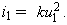

| 1. Перечислите основные принципы и теоремы электротехники, на которых базируются методы расчёта электрических цепей. |
2. Приведите классификацию электрических цепей. Чем отличаются цепи с сосредоточенными параметрами от цепей с распределёнными параметрами? |
3. Как
нужно соединить три резистора и выбрать их сопротивления,
чтобы при питании от одного источника напряжения отношение
напряжений на них было 1:3:6? |
4. Как
нужно соединить два резистора и выбрать их сопротивления,
чтобы при питании от одного источника напряжения отношение
их токов было 1:3? |
5. Симметричный резистивный треугольник преобразуется в эквивалентную эвезду. Определите сопротивления её ветвей, если сопротивление ветви треугольника равно 12 Ом. |
6. Три резистора соединены по схеме звезда. Сопротивления двух резисторов одинаковые, равные R , а сопротивление третьего в два раза меньше. Найдите сопротивления ветвей эквивалентного звезде треугольника. |
7. Определите параметры эквивалентного источника ЭДС, если известны параметры источника тока J = 5 А и G = 0,1 См, к полюсам которого подключен приёмник с сопротивлением R. Определите, при каком сопротивлении приёмника мощность потерь обоих источников одинакова? |
8. Сформулируйте и запишите формулы закона Ома для пассивного и активного участков электрической цепи. |
9. Сформулируйте первый и второй закон Кирхгофа. Запишите их математические выражения. |
10. Покажите, что уравнение первого закона Кирхгофа следует из принципа непрерывности полного тока, а уравнение второго закона Кирхгофа – из закона сохранения энергии. |
11. Почему в уравнениях первого закона Кирхгофа входящие в узел токи приняты положительными? Можно ли считать условно положительно направленными токи, выходящие из узла? |
12. В одной из ветвей цепи действует идеальный источник тока. Как следует учесть ток источника при записи первого закона Кирхгофа для узла, из которого выходит эта ветвь? |
13. Можно ли записать уравнение второго закона Кирхгофа для контура, если одна из его ветвей содержит только идеальный источник тока? |
14. Перечислите некорректные соединения идеализированных элементов электрической цепи. Напомним, что корректными называют соединения элементов цепи, для которой удовлетворяются законы Кирхгофа. |
15. Запишите в буквенном виде, сколько уравнений следует составить при расчёте схем цепей методом: а) законов Кирхгофа; б) контурных токов; в) узловых напряжений? |
16. Охарактеризуйте основные этапы: а) метода законов Кирхгофа (ЗК); б) метода контурных токов (МКТ); в) метода узловых напряжений (МУН). При каких условиях число уравнений по МУН меньше числа уравнений по МКТ? |
17. Сформулируйте принцип и метод наложения. |
18. Сформулируйте теорему об эквивалентном генераторе и перечислите основные этапы расчёта тока ветви цепи методом эквивалентного генератора. |
19. Поясните, что такое потенциальная диаграмма и для каких целей она строится? |
20. Определите понятия "матрица соединений", "матрица ветвей", "матрица узлов", "матрица контуров", "матрица-столбец токов", "матрица-столбец напряжений". |
21. Дайте определения матрицы сопротивлений и матрицы проводимостей, используемых при расчёте сложных цепей методом: а) законов Кирхгофа; б) контурных токов; в) узловых напряжений. |
22. Укажите, имеет ли значение при составлении матрицы соединений, какую из строк расширенной матрицы соединений вычеркнуть. |
21. Дайте определения матрицы сопротивлений и матрицы проводимостей, используемых при расчёте сложных цепей методом: а) законов Кирхгофа; б) контурных токов; в) узловых напряжений. |
22. Укажите, имеет ли значение при составлении матрицы соединений, какую из строк расширенной матрицы соединений вычеркнуть. |
23. Какие
топологические матрицы вы знаете? Запишите уравнения, составленные
по законам Кирхгофа, с использованием матриц [A] и [В]. |
24. Выразите токи ветвей через контурные токи, а напряжения ветвей через узловые и межузловые напряжения. |
25. В электрической цепи наряду с независимыми имеется также зависимый источник напряжения, управляемый током одной из ветвей. Является ли линейной такая цепь? |
26. Определите понятия "нелинейный резистор", "нелинейная цепь", "статическое и дифференциальное сопротивления", "неуправляемый нелинейный элемент (НЭ)", "управляемый НЭ". |
27. Качественно изобразите ВАХ известных вам типов неуправляемых и управляемых НЭ. Для каких типов НЭ дифференциальное сопротивление может быть отрицательным? |
28. Как заменить несколько параллельных ветвей с нелинейными элементами и источниками ЭДС на одну эквивалентную? Определите характеристики элементов эквивалентной ветви. |
29. Перечислите этапы расчёта нелинейных цепей: а) методом эквивалентного генератора; б) методом двух узлов. |
30. Перечислите функции, часто употребляемые при аппроксимации характеристик нелинейных элементов. |
31. В чём заключаются недостатки кусочно-линейной аппроксимации нелинейных характеристик? |
32. Два резистора с нелинейными
характеристиками включены последовательно. Определите вид
характеристики i2 = f(u2),
при которой зависимость i = f(u)
для всей цепи становится линейной. Характеристика другого
нелинейного элемента задана выражением 
|
33. Почему при расчёте нелинейной электрической цепи используют не одну функцию, аппроксимирующую характеристику нелинейного элемента, а несколько функций, которые аппроксимируют характеристику на нескольких отрезках?
34. Докажите возможность применения при расчёте тока в нелинейной ветви цепи метода эквивалентного генератора, в котором применяется наложение двух решений. |
35. Проверьте уровень усвоения учебного материала темы 2, воспользовавшись программой тестирования УТИС (щёлкните мышью на выделенном слове UTIS). |
|